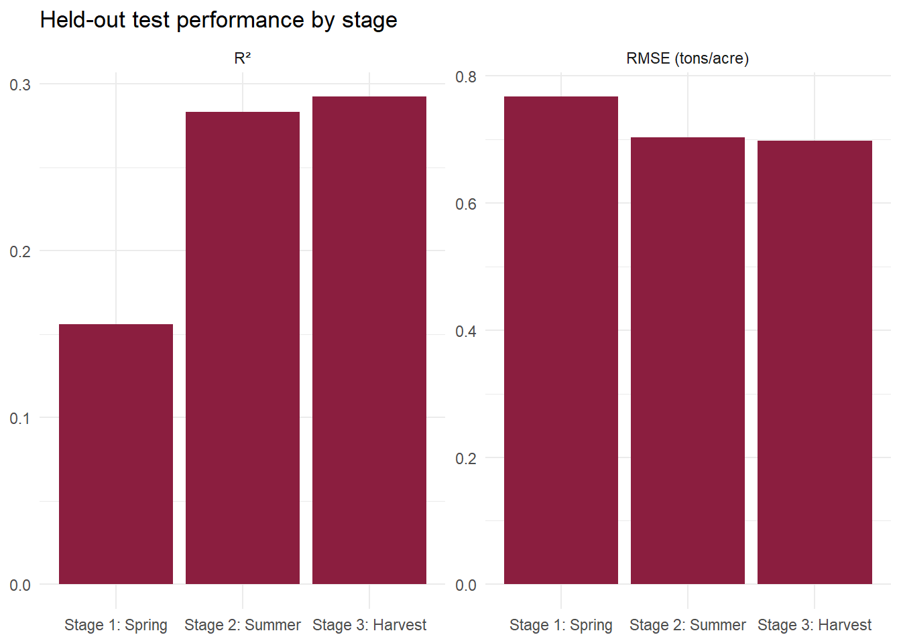
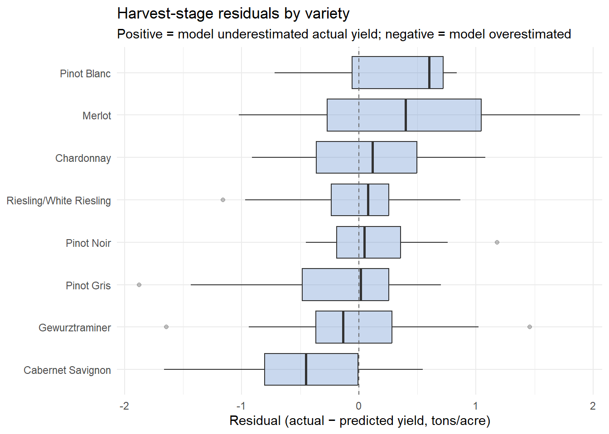
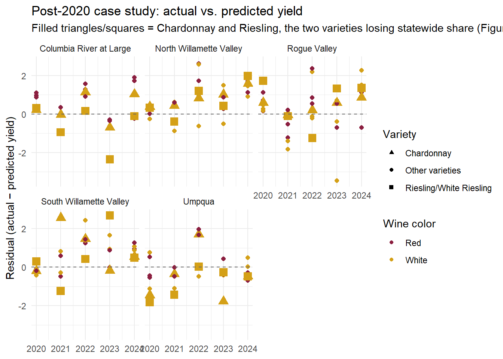

statewide_total <- statewide %>%filter(variety_label =="All") %>%select(yr, production_tons) %>%arrange(yr)ggplot(statewide_total, aes(x = yr, y = production_tons)) +geom_line(color ="gray70", linewidth =0.5, alpha =0.6) +geom_smooth(data = statewide_total %>%filter(yr <=2001), method ="loess", se =FALSE, color ="#8B1E3F", linewidth =1.3) +geom_smooth(data = statewide_total %>%filter(yr >=2002), method ="loess", se =FALSE, color ="#8B1E3F", linewidth =1.3) +annotate("segment", x =2020, xend =2020, y =0, yend =max(statewide_total$production_tons, na.rm =TRUE) *0.72 , linetype ="dashed", color ="gray40", linewidth =0.5) +annotate("text", x =2020, y =max(statewide_total$production_tons, na.rm =TRUE) *0.68 , label =str_wrap("2020: wildfire smoke taint", width =15), hjust =0, size =3.2, color ="gray30", lineheight =0.9) +scale_y_continuous(labels = comma) +labs(title ="Total Oregon wine grape production, 1987–2024",subtitle ="Smoothed trend, fit separately before/after 2002 methodology shift" , x =NULL, y ="Production (tons)") +theme_minimal()
`geom_smooth()` using formula = 'y ~ x'
`geom_smooth()` using formula = 'y ~ x'
Warning: Removed 1 row containing non-finite outside the scale range
(`stat_smooth()`).
Figure 4: Total Oregon wine grape production, 1987–2024, with separate smoothed trends fit around 2002 reporting methodology shift
Figure 4 demonstrates roughly tenfold growth in statewide wine production since the late 1980s, tracking the industry’s broader economic growth. We note a clear interruption in 2020, corresponding to a season with severe wildfire smoke taint that resulted in a substantial share of unusable fruit among that year’s harvest. This represents a discrete event rather than a gradual climate-trend effect.
weighted_yield_variety <- regional %>%filter(!is.na(production_tons), !is.na(acres_harvested), acres_harvested >0 , production_tons >0, variety_label !="All") %>%mutate(variety_group =if_else(variety_label %in% key_varieties, variety_label, "Other")) %>%group_by(yr, variety_group) %>%summarise(total_prod =sum(production_tons, na.rm =TRUE) , total_acres =sum(acres_harvested, na.rm =TRUE) , weighted_yield = total_prod / total_acres , .groups ="drop")ggplot(weighted_yield_variety, aes(yr, weighted_yield, color = variety_group)) +geom_line() +geom_vline(xintercept =2020, linetype ="dashed", color ="grey40") +annotate("text", x =2020.3, y =Inf, label ="2020 fires", hjust =0, vjust =2, color ="grey40", size =3.5) +scale_color_manual(values =c("Pinot Noir"="#b2182b", "Pinot Gris"="#4393c3" , "Chardonnay"="#d6604d", "Riesling/White Riesling"="#d4a017" , "Other"="#999999")) +labs(title ="Yield by variety, statewide",subtitle ="Production-weighted yield (total tons ÷ total harvested acres) — normalizes for acreage changes" , x =NULL, y ="Yield (tons per acre)", color ="Variety") +theme_minimal()
Figure 5: Production-weighted yield by variety, statewide, 1987–2024
weighted_yield_region <- regional %>%filter(!is.na(production_tons), !is.na(acres_harvested), acres_harvested >0 , production_tons >0, yr >=2002 , !region_label %in%c("Eastern Oregon", "Other Region", "Other Oregon")) %>%group_by(yr, region_label) %>%summarise(total_prod =sum(production_tons, na.rm =TRUE) , total_acres =sum(acres_harvested, na.rm =TRUE) , weighted_yield = total_prod / total_acres , .groups ="drop")ggplot(weighted_yield_region, aes(yr, weighted_yield, color = region_label)) +geom_line(linewidth =0.8) +geom_vline(xintercept =2020, linetype ="dashed", color ="grey40") +scale_color_brewer(palette ="Set1") +labs(title ="Yield by region, 2002–2024" , subtitle ="Production-weighted yield (total tons ÷ total harvested acres)" , x =NULL, y ="Yield (tons per acre)", color ="Region") +theme_minimal()
Figure 6: Production-weighted yield by region, 2002–2024
Figure 5 shows a dramatic dip in Pinot Noir yield in 2020—from roughly 62,000 to 40,000 tons statewide—while Pinot Gris and Chardonnay barely register the disruption. This selective impact is consistent with wildfire smoke taint, which binds more readily to red wine grapes because of their extended skin-contact fermentation process than to white wine production; anecdotally, 2020 also drove some producers toward “white Pinot” as a workaround, itself a sign of the industry’s adaptive capacity.
All varieties rebound to new all-time highs within three years. Indeed, outside of that one disrupted year, yield for Pinot Noir and the other key varieties has held steady or trended upward across regions, and the same holds when the data is cut by region instead of variety in Figure 6. The historical pattern demonstrates that, within the range of GDD and heat stress Oregon has experienced thus far, warmer conditions have generally corresponded with higher yields per acre across nearly every variety and region.
However, warmer seasons can raise yield while simultaneously degrading the flavor and quality characteristics that define Oregon’s premium wines, particularly Pinot Noir.
The quality concern hiding under a healthy yield trend
sw_climate <- statewide %>%distinct(yr, diurnal_range_ripening) %>%arrange(yr)ggplot(sw_climate, aes(yr, diurnal_range_ripening)) +annotate("rect", xmin =-Inf, xmax =Inf, ymin =15, ymax =20 , fill ="#4A7CC7", alpha =0.08) +annotate("text", x =min(sw_climate$yr, na.rm =TRUE), y =20.3 , label ="Ideal range for Pinot Noir ripening (15-20°C)" , hjust =0, size =3, color ="#4A7CC7") +geom_line(color ="grey60", alpha =0.7, linewidth =0.6) +geom_smooth(method ="lm", se =TRUE, color ="#8B1E3F", fill ="#8B1E3F", alpha =0.15, linewidth =1.1) +geom_vline(xintercept =2020, linetype ="dashed", color ="grey40", linewidth =0.5) +labs(title ="Ripening-season diurnal temperature range is shrinking" , subtitle ="Day/night temperature swing during ripening (Aug-Sep), statewide average, 1981–2024" , x =NULL, y ="Diurnal temperature range (°C)") +theme_minimal() +theme(plot.title =element_text(size =14, face ="bold") , plot.subtitle =element_text(size =9, color ="grey40"))
`geom_smooth()` using formula = 'y ~ x'
Figure 7: Diurnal ripening temperature range, statewide average, 1981–2024, shown against the ideal 15–20°C range for Pinot Noir ripening
Figure 7 demonstrates a diurnal range that has narrowed from roughly 17°C in the 1980s to roughly 15°C today, indicating that nights are warming faster than days. This is consistent with a pattern documented globally in the climate literature and generally attributed to changes in cloud cover trapping heat overnight [@ucs2022nights; @liu2024dtr]. This day-night temperature swing is a key mechanism behind Oregon’s suitability for growing Pinot Noir: warm days build sugar, while cool nights slow the grape’s respiration long enough to retain the acidity, color, and aromatics that define the variety [@kingestate2025; @ajev2012dtr]. Controlled experiments on Pinot Noir specifically have found that compressing this range alters organic acid metabolism and can suppress anthocyanin accumulation, and a companion study found Pinot Noir was one of the varieties most sensitive to elevated diurnal temperature among the major red varieties tested, in contrast to Merlot, which showed little effect [@frontiers2025bunchheating; @pmc2022highTemp].
The narrowing diurnal range finding is a leading indicator worth flagging even though the problem has not yet surfaced in production data alone. This metric operates on wine quality through a physiological process that is more nuanced than heat-accumulation metrics alone. Thus, models built on yield alone will miss this leading indicator entirely. Future research could evaluate this risk through proxy indicators of wine quality such as price premiums or critic-score text mining.
Predicting yield across the growing season
We next aim to create a predictive model that is built on two key observations from our analysis thus far: (1) yield has been resilient across the historical climate range and (2) the climate signal accumulates in stages over the course of the growing season—initial spring frost risk, then summer heat, and lastly harvest-season conditions. We argue that model built only on a single end-of-season snapshot is less useful to a wine grower who experiences these climate conditions sequentially throughout the annual growth cycle.
From production and price to a staged yield model
Our original proposal called for a two-stage gradient-boosted forest (XGBoost), predicting production and then price, compared across Oregon, California, and Washington. In practice, several findings from our own statistical analysis led us to a dfferent and more useful approach. Price data is only avaible at the region level from 2010 onward which left too short a window to support a second-pricing-stage model. California and Washington integration remains a longer-term goal of the underlying data pipeline rather than a modeling input for this phase. Most importantly, our own correaltion and yield analysis pointed toward a more specific question than “Does climate affect production?” and instaed toward (1) whether climate sensitivity differs meaningfully by variety, and (2) whether that sensitivity depends on which point in the growing season is being measured.
Thus a single-outcome model was built, predicting ‘yield_derived’ (production tons per harvested acre) for Oregon’s robust region-by-variety combinations using a SVM with a RBF kernel, tuned via stratified cross-validation. Rather than fitting one model on the full season’s climate data, we fit three models representing what a grower would actually know at each stage of the season: a spring model (frost risk only), a summer model (adding growing degree days, heat stress, and vapor pressure deficit), and a harvest model (adding véraison-to-harvest GDD, October precipitation, and ripening diurnal range). All three stages were evaluated on the same pre-2020 train/test partition and cross-validation folds, so that any difference in performance reflects the added climate information rather than a different sample. Post-2020 data was held out entirely from training and evaluated separately, as a case study rather than a fourth fold, consistent with our treatment of 2020 elsewhere in this report as a discrete disruption (wildfire smoke taint) rather than part of the underlying climate trend.
Climate becomes predictive mid-season, then plateaus
stage_performance %>%filter(.metric %in%c("rmse", "rsq")) %>%mutate(stage =recode(stage, !!!stage_labels),metric =recode(.metric, rmse ="RMSE (tons/acre)", rsq ="R\u00b2") ) %>%ggplot(aes(x = stage, y = .estimate)) +geom_col(fill ="#8B1E3F") +facet_wrap(~metric, scales ="free_y") +labs(title ="Held-out test performance by stage", x =NULL, y =NULL) +theme_minimal()

Figure 8: Held-out test performance by growing-season stage
Figure 8 summarizes held-out test performance across the three stages. Moving from the spring model to the summer model very nearly doubles the variance explained (R² rising from 0.16 to 0.28, RMSE falling from 0.77 to 0.70 tons/acre); moving from the summer model to the harvest model adds comparatively little (R² of 0.29, RMSE of 0.70). This is not a modeling shortfall — it is the same pattern already established elsewhere in this report from a different angle. Our diurnal-range analysis (see Results) found that Oregon’s narrowing ripening-season temperature swing is a quality signal rather than a yield signal, one that ‘models built on yield alone will miss.’ The staged model reaches the same conclusion empirically: adding harvest-window features, including ripening diurnal range, does almost nothing to improve yield prediction, because yield genuinely is not where that climate signal shows up.
Also worth stating, even the best-performing stage explains under a third of the yield’s vairance. We read this as a finding rather than a limitation, as it is the model-based counterpart to a pattern our correlation analysis already surfaced: within the historical range of growing degree days and heat stress Oregon has experience so far, warmer conditions have generally corresponded with higher yield, not lower, and yield has proven comparatively resilient to the climate trend documented throughout this report. Our model struggling to predict yield from climate alone is consistent with climated being a secondary driver of yield ouctomes at the level this dataset can observe.
Variety identity outweights early-season climate
stage_importance %>%mutate(stage =recode(stage, !!!stage_labels)) %>%group_by(stage) %>%slice_max(Importance, n =8) %>%ungroup() %>%ggplot(aes(x =reorder_within(Variable, Importance, stage), y = Importance)) +geom_col(fill ="#4A7CC7") +coord_flip() +scale_x_reordered() +facet_wrap(~stage, scales ="free_y") +labs(title ="Which features actually move the model's predictions",x =NULL, y ="Importance (RMSE increase when permuted)") +theme_minimal()
Figure 9: Permutation importance, top features by stage
Figure 9 shows permutation importance for each stage’s top features. In the spring model, predictive power comes almost entirely from variety identity rather than from the available climate features (frost days, coldest spring night). This is the clearest evidence yet for the varietal-susceptibility pattern this report has built toward since our correlation analysis (see Analysis), where Pinot Gris (r = 0.47), Pinot Noir (r = 0.32), and Riesling (r = -0.17) showed meaningfully different yield sensitivity to growing degree days. The correlation coefficients shows that sensitivity differs; the model falling back almost entirely on variety identity when climate information is thin shows that variety is the dominant signal at that point in the season.
By the summer and harvest stages, growing degree days (April-Septmber) emerge as the leading climate feature, consistently outranking summer vapor pressure deficit. Our earlier variance inflation factor analysis (see Analysis) found that GDD and VPD are highly correlated, so the model’s preference for GDD is not surprising. Ulitmately, the staged model resolved that GDD is the feature actually doing the predictive work, and that VPD’s strong pairwise correaltion with it appears to have been substanitally reduntant.
Where the model explains variety well, and where it doesn’t
stage_residuals %>%filter(stage =="stage3_harvest_svm") %>%mutate(variety_label =fct_reorder(variety_label, residual, .fun = median)) %>%ggplot(aes(x = variety_label, y = residual)) +geom_boxplot(fill ="#4A7CC7", alpha =0.3) +geom_hline(yintercept =0, linetype ="dashed", color ="grey40") +coord_flip() +labs(title ="Harvest-stage residuals by variety",subtitle ="Positive = model underestimated actual yield; negative = model overestimated",x =NULL, y ="Residual (actual \u2212 predicted yield, tons/acre)") +theme_minimal()

Figure 10: Residual spread by variety, harvest-stage model
Figure 10 shows harvest-stage residuals by variety. The model does a good job of explaining yield for Pinot Noir, Chardonnay, and Riesling, which all show residuals centered around zero with a reliatvely tight spread. However, for the states thiner varieties, such as Cabernet Sauvignon residuals sit consistently below zero, meaning the model systematically overestimates its yield; Merlot’s sits consistently above zero and spans the widest range of any variety, meaning that the model systematically underestimated it and does so unevenly. Further, Pinot Blanc’s residuals also skew positive.
This is a meaninful qualifier for the varietal-susceptability pattern this report has built towards since our correlation analysis (see Analysis). The model’s ability to explain yield is not uniform across varieties, and the model’s performance is strongest for the varieties that are most important to Oregon’s wine industry. This is consistent with the model’s permutation importance results, which found that variety identity was the most important feature in the spring stage and remained a strong predictor throughout the season.
Post-2020 case study: wildfire smoke taint
post2020_case <- post2020_case %>%mutate(wine_color =if_else( variety_label %in%c("Pinot Noir", "Cabernet Savignon", "Merlot"),"Red", "White" ),# Chardonnay and Riesling/White Riesling are the two varieties Figure 1# showed losing statewide production share most sharply since 1990.phasing_out = variety_label %in%c("Chardonnay", "Riesling/White Riesling"),marker_group =if_else(phasing_out, variety_label, "Other varieties") )ggplot(post2020_case, aes(x = yr, y = residual)) +geom_point(aes(color = wine_color, shape = marker_group,size = phasing_out)) +geom_hline(yintercept =0, linetype ="dashed", color ="grey40") +scale_color_manual(values =c(Red ="#8B1E3F", White ="#D4A017"),name ="Wine color") +scale_shape_manual(values =c(Chardonnay =17, `Riesling/White Riesling`=15,`Other varieties`=16),name ="Variety") +scale_size_manual(values =c(`TRUE`=3.5, `FALSE`=1.8), guide ="none") +scale_alpha_manual(values =c(`TRUE`=1, `FALSE`=0.4), guide ="none") +facet_wrap(~region_label) +labs(title ="Post-2020 case study: actual vs. predicted yield",subtitle ="Filled triangles/squares = Chardonnay and Riesling, the two varieties losing statewide share (Figure 1)",x =NULL, y ="Residual (actual \u2212 predicted yield)") +theme_minimal()

Figure 11: Post-2020 residuals, model trained only on pre-2020 data
Figure 11 applies the harvest-stage model, trained exclusively on pre-2020 data, to the 2020–2024 case-study window, now colored by red versus white variety and with Chardonnay and Riesling/White Riesling, the two varieties Figure 1 showed losing the most statewide production share since 1990 — pulled out as distinct markers. If the 2020 production disruption discussed in Results were purely a matter of unusual climate conditions, we would expect the model’s largest negative residuals to concentrate in 2020 itself, and specifically among red varieties, consistent with our production-weighted yield analysis showing Pinot Noir was hit hardest by wildfire smoke taint. Instead, 2020 residuals sit closer to zero across most regions than expected, while the more pronounced negative clusters appear in 2021 and 2023.
Ulitametely, the post-2020 case study shows that wildfire smoke taint is a discrete event that is not well captured by climate features alone. The model’s inability to predict the 2020 disruption, and its subsequent overestimation of yield in 2021 and 2023, suggests that other factors, such as market dynamics or management practices, may have played a role in the observed yield outcomes.
Limitations
With rouglhly 1,000 usable region-by-variety-year observations split across eight varieties and five regions, with several regions varieties such as Pinot Blanc and Merlot having few enough rows that individual outlier years can meaningfully shift both train/test comparability and residual behavior; we verified and, where appropriate, constrained our train/test split to prevent a single high-leverage year from defining a variety’s entire test-set performance (see accompanying modeling notebook for the specific diagnostic). An R² below 0.30 at every stage means this model should be read as evidence about where and for which varieties climate signal is more or less present in the yield record, not as a production-forecasting tool. And because yield, not price or the qualitative characteristics that matter to Oregon’s fine wine reputation, is the only outcome modeled here, these results say nothing about the diurnal-range quality concern raised earlier in this report — a limitation that is itself consistent with, rather than in tension with, our finding that harvest-window features add little to yield prediction specifically.